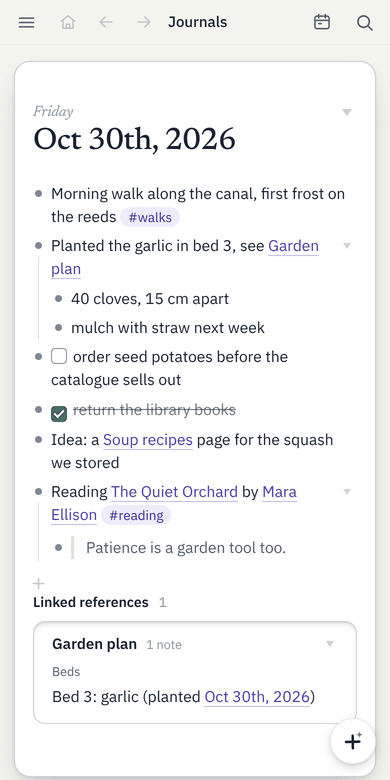

thinky
Try itA small, fast outliner for your notes, on Windows and Android.
Why I made it. I was an avid Logseq user. When Logseq decided to move away from Markdown files, I built my own, so I could keep working the way I loved and add the features I wanted along the way. thinky is inspired by Logseq and Obsidian: every note is a plain Markdown file in a folder you own.
thinky opens a folder of Logseq-style Markdown notes and lets you write in it: daily journals, pages,
[[links]],#tags, properties, to-dos and the notes that link back to each page. It starts in a moment, stays small, and works on the same plain files Logseq uses, so you can switch back and forth.Your notes stay plain Markdown files on your own devices. thinky has no accounts, no servers and no tracking. To use the same notes on your laptop and phone, keep the folder in a sync app you already use, such as Google Drive or Syncthing.
Try it in your browser
An online demo with a few sample pages, nothing to install. Write, link pages and tick off to-dos to see how it feels. What you write stays in your browser.
Open the demoGet it. Always the newest release.
Also: a portable Windows program that needs no installing, and every release.
The online demo leaves out the AI features and backups; they need the app.

Today's journal on a laptop, in the thinky look. The notes are made up. Start a new notes folder
On first start, choose Create a new notes folder. thinky suggests a folder called "Notes" in your Documents (rename it or pick another place) and sets it up:
pages: one Markdown file for each page you make.journals: one file a day, such as2026_11_02.md. The Journals view starts on today's page, so you can just start writing.logseq: the folder's settings (config.edn: date format, to-do words, favourites), plus thinky's backups and deleted pages.assets: appears when you first add a picture or file.
With Add the short tour (4 pages) ticked, it also adds four short pages, starting with Start here, that explain writing, links, the journal, to-dos and search on a computer and a phone. Delete them whenever you like.
Your notes are plain text files you can open with any editor, and Logseq can open the same folder too.
Use it with your Logseq notes
thinky opens an existing Logseq folder as it is: choose the folder that holds
pages,journalsandlogseq/config.edn. Nothing is imported or converted.Your settings carry over. It reads that folder's
config.edn: where journals and pages live, the date and file name formats, favourites, the to-do workflow, quick-capture templates and shortcuts.Logseq's own Markdown. Bullets,
key:: valueproperties,[[links]],#tags, block references, TODO/DONE, scheduled and deadline dates. Lines you didn't touch are written back exactly as they were, so Logseq opens every file thinky saves.Use both. Logseq on the desktop or the phone can keep using the same folder, even while thinky has it open. When both change a page, thinky merges the two and never silently overwrites.
For Logseq's Markdown folders (Logseq 0.10 and its file-based graphs). Org-mode files, whiteboards and Logseq's newer database version aren't supported.
What it does
Journals and pages, with links, tags, properties, linked and unlinked references, and fast search that forgives typos in page names.
Safe with sync. If a page changed on another device while you were writing, thinky merges the two. When it can't, it shows both versions side by side, and nothing is ever silently overwritten. Safety copies and each page's history let you go back.
Quick capture. A shortcut key on Windows opens a small "Add to journal" box at once. On Android: home-screen widgets, a Quick Settings tile and the share sheet. A browser extension for Edge or Chrome, from their stores, sends highlights, and shows them again when you come back (how).
Optional AI. Choose Claude, OpenAI, Gemini, OpenRouter, or an offline program such as Ollama in Settings › AI, to tidy a note (Polish note), read a picture's words, ask about a page, or suggest links. Off until you set it up (what is sent).
Backups. On the laptop, optional backups only when something changed: dated zips of the notes folder, or a git repository such as GitHub.
Feels like Logseq. The same files, folders and settings, block references, templates, to-do states, tabs and two pages side by side, and many looks, light and dark. This website and the demo use the Plain look: choose Light, Dark or System with Look at the top of the page.
Lean. About 3 MB to install on Windows, with no framework. Nothing runs in the background, except a tiny helper if you choose a shortcut key.

A page in the Plain night look. 
On a phone.
Installing
Windows: run the installer. Windows may show "Windows protected your PC", because the program isn't signed with a paid certificate; choose More info, then Run anyway. The Windows files aren't signed with a code-signing certificate yet (see the code signing policy). After that, thinky updates itself from Settings › About, and checks each update's signature before installing it.
Android: open the downloaded file and allow your browser to install apps when Android asks. thinky needs "access to all files" to read your notes folder. Later versions update from Settings › About; Android only accepts an update signed like the app you have.
Uninstalling: on Windows, Settings › Apps › Installed apps › thinky › Uninstall; on Android, like any app. Your notes folder is never touched.
Open source
thinky is free software under the GNU Affero General Public License, version 3. The code, the history of how it was built and the issue tracker are on GitHub: github.com/srikanth-iyer/thinky.
Found a problem or have an idea? Open an issue, or use Settings › Help › Send feedback in the app.